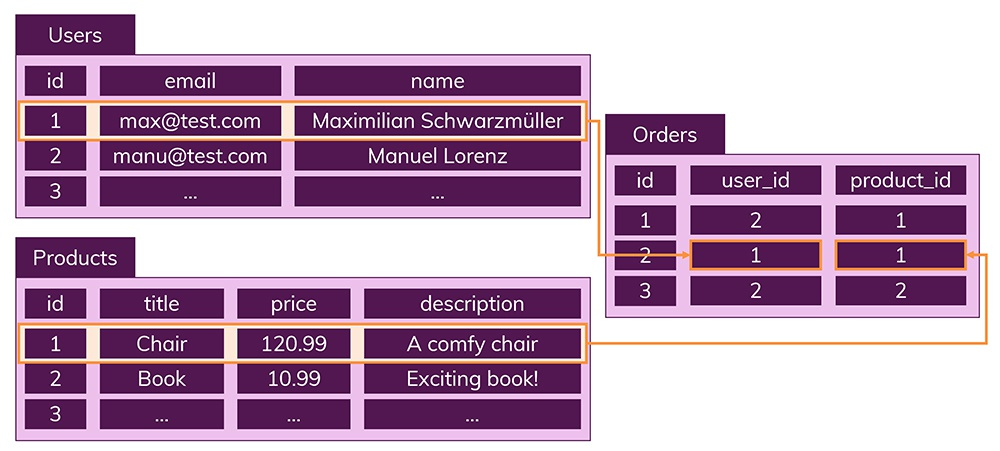
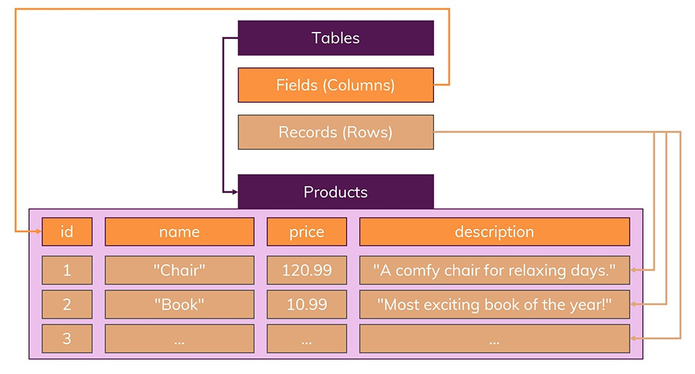
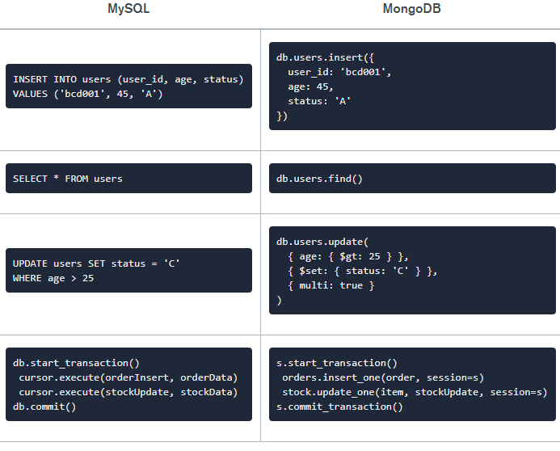

NoSQL. MongoDB.
SQL Databases
- Data is stored in database tables by following a strict data schema (= structure)
- Data is distributed across multiple tables which are connected via relations
Strict Schema
-

Relations
-

The Problem with Structured Data

NoSQL Databases
- No schemas
- No relations
Types of noSQL databases
Document in MongoDB

Common Terms in MongoDB
- _id
- Collection
- Cursor
- Database
- Document
- Field
- JSON
Difference between MongoDB & RDBMS
Download MongoDB

Creating a Database
- To view available databases, run this command: show dbs
- Run this command to create a database and set it to be the active database:
use databasename
Query Language
-

Disadvantages
- Increased flexibility might lead you to work sloppy and postpone data structure decisions
- Duplicate data means that you have to update multiple collections and documents if that data changes - not just one record in one table as you would do it in the SQL world
Advantages
- Absence of a schema gives you more flexibility - you can adjust your stored data at any point and introduce new "fields"
- Data is stored in the format your app needs it - this speeds up fetching the data